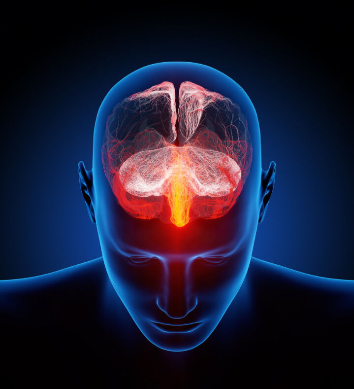
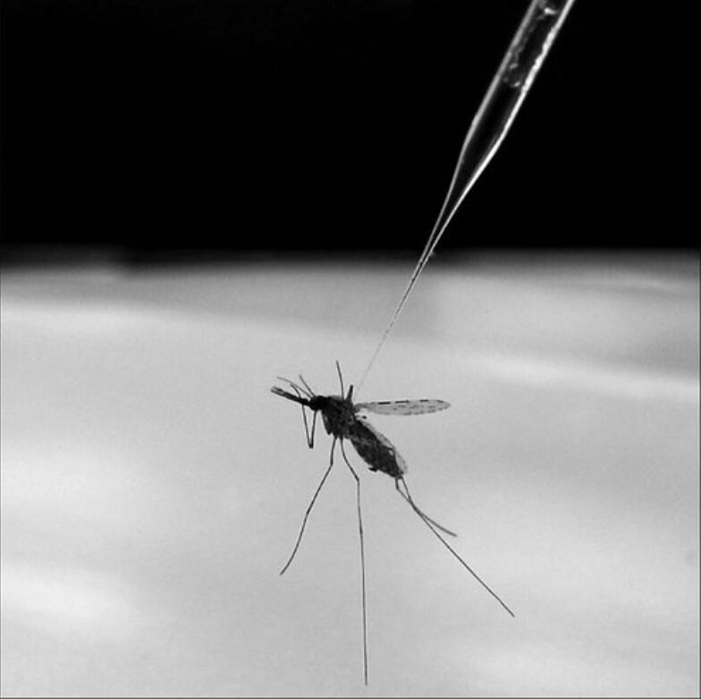
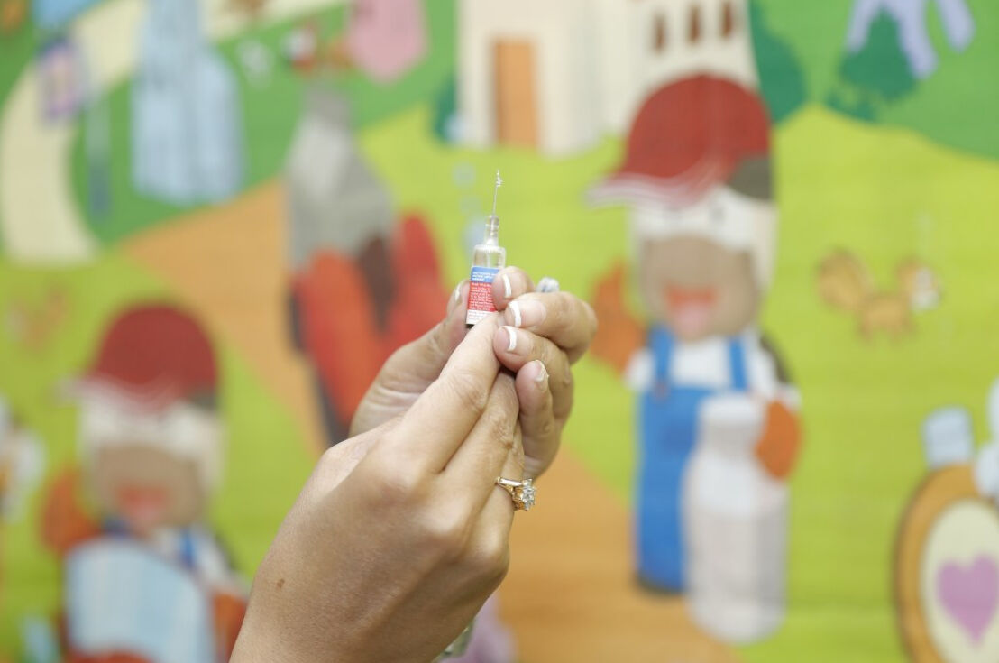

За полазнике
За тренере
За полазнике
За тренере
Модул 5: Психологија креирања мисинформација
Опис модула
Главни циљ овог модула је да се представе когнитивни механизимни који: људе чине подложним мисинформацијама; доприносе да мисинформације буду упорне и тешке за исправљање; могу помоћи спречавању утицаја као и ширења мисинформација.
Секундарни циљ је да усмери тренере који желе да користе садржај овог модула за обуку полазника.
Уз горенаведене циљеве, у модулу су дата и упутства како да се предмет предаје.
Полазници који успешно заврше овај модул моћи ће да:
- разумеју когнитивне механизме који људе чине рањивим на мисинформације
- разумеју когнитивне механизаме који мисинформације чине упорним и тешким за исправљање
- разумеју сопствене когнитивне механизме које могу користити за спречавање утицаја као и ширења мисинформација
Поред тога, тренери који успешно заврше овај модул, разумеће смернице за обуку на прави начин.
Структура модула
Овај модул састоји се из следећих целина:
- Опис модула (циљеви, опис садржаја и исходи учења)
- Структура модула
- Смернице за полазнике
- Смернице за тренере (како се припремити, методе које треба користити и савети за тренере)
- Садржај (материјал за учење и вежбање)
- Квиз
- Референце (цитирани извори, препоручени извори и видео записи)
Главни циљеви модула, опис садржаја и исходи учења објашњени су у делу Опис модула. Садржај обухвата све материјале за учење и вежбе везане за садржај. Квиз укључује питања са вишеструким одговорима како би полазници тестирали свој напредак. Одељак Референце обухвата списак извора цитираних у садржају модула и листу додатних извора и видео-записа који се препоручују за читање и гледање како би се проширило знање о овој теми. Смернице за полазнике укључују упутства и сугестије за полазнике.. Смернице за тренере воде тренере кроз различите фазе обуке и дају савете који би могли да буду корисни током предавања предмета.
Смернице за полазнике
Од полазника се очекује да прочитају текст, пажљиво проуче дате примере, погледају препоручене видео записе и ураде вежбања. Они могу да консултују предложене изворе за додатне информације. Након проучавања садржаја, полазницима се препоручује да ураде квиз како би проценили свој напредак. Уколико је потребно, могу поново проучити материјал за учење.
Смернице за тренере
Смернице за тренере укључују сугестије и савете за тренере о томе како да користе садржај овог модула за обуку полазника..
Припрема
Припремите презентацију (Пауерпоинт/Прези/Канва) која је обогаћена визуелним материјалима (слике и видео клипови) и јасним примерима. Примере и вежбања у овом модулу прилагодите темама која су познатије конкретној циљној групи. Што су примери познатији и популарнији, то ћете боље пренети поруку.
Почетак
Како бисте увели полазнике у тему, на почетку можете користити кратак квиз (3 до 5 питања) направљен у Кахуту или им поставити питања путем Ментиметар апликације. Поменути квиз и питалице се могу користити као мотивационо средство и средство за проверу постојећег знања полазника о овој теми.
Методологија
Током обуке могу се комбиновати различите наставне методе:
- Предавања
- Дискусије
- Рад у групама
- Самопроцењивање
Савети за тренере
Загревање
Ефикасан начин укључивања полазника и постављања заједничких очекивања о томе шта ће научити јесте постављање неколико прелиминарних питања о овој теми. На пример, можете питати полазнике шта мисле о улози психолошких фактора на ширење мисинформација, шта људе чини подложним мисинформацијама, зашто наседамо на лажне вести, зашто је мисинформације тако тешко исправити.
Након дискусија, уверите се да су полазници разумели да људска психологија чини људе подложним мисинформацијама.
Представљање циља лекције
Циљ лекције треба да буде јасан (објаснити когнитивне механизме који људе чине подложним мисинформацијама; који доприносе да мисинформације буду упорне и тешке за исправљање; који могу помоћи спречавању утицаја као и ширења мисинформација). Након питања за загревање, биће лакше разјаснити циљеве.
Представљање садржаја лекције
Приликом представљања садржаја водите рачуна о интеракцији са полазницима и подстакните их на активно учешће.
- Пре него што дате преглед когнитивних фактора који људе чине подложним мисинформацијама, замолите учеснике да их детаљније образложе.
- Пре него што дате преглед когнитивних фактора који доприносе да мисинформације буду упорне и тешке за исправљање, замолите учеснике да их елаборирају.
- Када демонстрирате примере, поткрепите их доказима (по могућности резултатима научних истраживања).
- Када дате свеобухватан преглед когнитивних механизама који људе чине подложним мисинформацијама, питајте учеснике да ли се когнитивни механизми могу користити за борбу против мисинформација и разрадите их.
Закључак
Направите кратак резиме лекције и поставите неколико питања која ће вам помоћи да истакнете најважније поруке које желите да пренесете.
- Питајте полазнике да ли им сазнање о когнитивним факторима који утичу на лако прихватање мисинформација и постојаност мисинформација помаже да успоставе контролу.
Након дискусије, уверите се да полазници разумеју да постоје бројни когнитивни механизми који стоје иза ширења мисинформација, али да постоје и други когнитивни механизми који се могу користити у борби против пласирања мисинформација.
Садржај: Психологија креирања мисинформација
Увод
У данашње време, с једне стране, медији и интернет пружају огромне количине информација, а велики број агената (као што су пропагандисти, профитери и тролови) се боре за контролу над нашим мислима и осећањима (WikiMedia UK, 2017). С друге стране, терет се ставља на појединца да разврста чињенице од фикције. Међутим, појединци имају ограничено време, когнитивне ресурсе или мотивацију да разумеју сложена питања као што су научна открића или политички развој, а заблуде су уобичајене. Штавише, када се једном формирају нетачна уверења, изузетно их је тешко искоренити (Ecker, Lewandowsky, Swire, & Chang, 2011, стр. 570). Чак и након што људи добију јасне и веродостојне исправке, мисинформације настављају да утичу на њихово размишљање. Последице могу бити озбиљне. Веровање у мисинформације може неповољно да утиче на доношење одлука и има импликације у стварном свету у различитим областима као што су образовање, здравство и економија (Swire-Thompson, & Ecker, 2018, стр. 2 in pre-print).
Психологија мисинформација се бави менталним пречицама, конфузијама и илузијама које подстичу људе да верују у ствари које нису истините. Људска психологија је та која чини људе рањивим на мисинформације и утиче на то да ли исправке функционишу или не (Shane, 2020c).

"Human brain illustrated with millions of small nerves" Аутор: Ars Electronica доступно под лиценцом CC BY-NC-ND 2.0
Когнитивни механизми који људе чине подложним мисинформацијама
У овом делу укратко су представљене психолошке теорије и основни когнитивни фактори који чине људе подложним мисинформацијама. Како бисмо могли да спречимо њихово штетно дејство, важно је да разумемо ове факторе и раздвојимо једне од других.
Когнитивна шкртост или интелектуална лењост
Интелектуална лењост или такозвана когнитивна шкртост је склоност размишљању и решавању проблема на једноставније начине и избегавању трошења софистицираног когнитивног напора, без обзира на интелигенцију (Cognitive miser, 2020). Појам се односи на “психолошке механизме који штеде време и труд утрошен на обраду информација упрошћавањем друштвене стварности, која би иначе својом сложеношћу преплавила ‘когнитивне капацитете‘ људи” (Cognitive miser, 2021).
Док когнитивна шкртост помаже људима да ефикасно користе свој мозак, она такође доводи до тога да људи не улажу довољно когнитивног напора када је то потребно, на пример, када размишљају о томе да ли је нешто што виде у вестима истинито (Shane, 2020c).
Принцип ”брзог решења”
“Принцип ‘брзог решења’ (енг. satisficing) заснива се на одабиру информација које су ‘довољно добре’ да задовоље основне потребе или одабиру првог ‘прихватљивог одговора’ на питање или решење проблема” (Cooke, 2018). То је један од облика ограничене рационалности и наводи људе да не користе све своје когнитивне ресурсе за постизање оптималних исхода, већ уместо тога користе само онолико колико је потребно да обезбеде довољно прихватљив исход за контекст (Metzger & Flanagin, 2013, стр. 213).
“Принцип ‘брзог решења’ могао би бити резултат неколико фактора као што су интелектуална лењост; неспремност или неспособност да се носи са преоптерећеношћу информацијама; одсуство потребне вештине процене информација. Шта год да је разлог, он доприноси ширењу мисинформација и дезинформација тако што омогућава да информације ниског квалитета остану у оптицају и наставе да се шире” (Cooke, 2018).
Теорија дуалног процеса
Теорија дуалног процеса мишљења тврди да истовремено коегзистирају два различита система мишљења - брзо размишљање и споро размишљање. Уопштено говорећи, брзо размишљање је брз, аутоматски, без напора, асоцијативан и афективно заснован облик расуђивања. Насупрот њега је споро размишљање, као промишљен и намеран процес који захтева напор и употребу когнитивних ресурса, а заснива се на симболичкој и апстрактној манипулацији правилима (Gronchi & Giovannelli, 2018).
Због своје склоности ка когнитивној шкртости, људи углавном користе брзу, аутоматску обраду која ствара ризик од мисинформација из два разлога. Прво, што је нешто лакше обрадити, већа је вероватноћа да се сматра истинитим. Брзе и лаке процене се често чине исправним чак и када то нису. Друго, могу се пропустити детаљи који понекад могу бити пресудни. На пример, особа се може сетити нечега што је прочитала на интернету, али је заборавила да је то разоткривено (Shane, 2020c).
"The Thinker" Аутор: Dano доступно под лиценцом CC BY 2.0
Хеуристике
Термин хеуристика означава менталне пречице, које олакшавају когнитивно оптерећење приликом доношења одлуке (Heuristic, 2021). Хеуристике омогућавају људима да брзо и ефикасно решавају проблеме и доносе одлуке (Cherry, 2021). Истраживања доказују да хеуристике имају важну функцију у помагању људима да се ефикасно носе са огромним количинама информација и одлука са којима се сусрећу сваког дана (Metzger & Flanagin, 2013, стр. 214).
Иако хеуристикe помажу да се убрза решавање проблема и доношење одлука, оне могу да проузрокују и грешке. Могу довести до когнитивних пристрасности, погрешних процена и нетачних закључака. Ослањање на постојећу хеуристику такође може да отежа сагледавање алтернативних решења или проналажење нових идеја. Хеуристике такође доприносе стереотипима и предрасудама (Cherry, 2021).
Когнитивна дисонанца
Когнитивна дисонанца (спознајни несклад) описује стање менталне нелагоде код појединца коју покреће ситуација у којој се особа суочава са чињеницама које су у супротности са његовим или њеним веровањима, идејама и вредностима. Теорија когнитивне дисонанце претпоставља да људи теже унутрашњој психолошкој доследности. Дакле, када је присутна дисонанца, они покушавају да је смање и постигну консонанцу (складност). Осим тога, они активно избегавају ситуације и информације које би могле да повећају дисонанцу (Taddicken & Wolff, 2020, стр. 207). Когнитивна дисонанца може навести људе да одбаце веродостојне информације како би умањили дисонанцу (Shane, 2020c).
"Dissonance" Аутор: hernanpba доступно под лиценцом CC BY-SA 2.0
Пристрасност потврђивања
Пристрасност потврђивања (енг. confirmation bias), једна од многих когнитивних пристрасности која се може посматрати као проблематичан аспект људског расуђивања, подразумева тражење или тумачење доказа на начине који су пристрасни према постојећим веровањима и очекивањима (Nickerson, 1998, стр. 175). Другим речима, то је склоност тражењу и веровању у информације које већ потврђују нечије постојеће менталне моделе, претходно знање и уверења, за разлику од тражења информација из различитих, потенцијално контрадикторних извора (Cooke, 2018).
Актери дезинформација могу да искористе ову тенденцију да појачају постојећа уверења (Shane, 2020c). Велики број емпиријских доказа подржава идеју да је пристрасност потврђивања опсежна, снажна и да се појављује у бројним облицима. Докази такође подржавају гледиште (мишљење) да када особа једном заузме став о неком питању, његова/њена примарна сврха постаје одбрана или оправдање тог става. То значи да без обзира на то да ли је нечије сагледавање доказа било непристрасно пре него што је заузет став, онo након тога може постати веома пристрасно (Nickerson, 1998, стр. 177).
Мотивисано резоновање
Мотивисано резоновање је облик расуђивања у коме људи, да би дошли до жељеног закључка, приступају, конструишу и процењују аргументе на пристрасан начин. Људи користе стратегије расуђивања које им омогућавају да извуку закључке које желе да извуку (Motivated Reasoning, n.d.). Другим речима, људи користе своје вештине расуђивања да верују у оно у шта желе да верују, уместо да утврђују истину. Кључна тачка овде је идеја да рационалне способности људи, а не лењо или ирационално размишљање, могу такође да доведу до погрешних уверења (Shane, 2020c).
Флуентост
Флуентност се односи на лакоћу са којом људи обрађују информације. “Поновно излагање изјави повећава субјективну лакоћу којом се та изјава обрађује. Ова повећана флуентност (лакоћа) обраде, заузврат, повећава вероватноћу да се изјава процени као тачна” (Reber & Unkelbach, 2010, стр. 563). Другим речима, већа је вероватноћа да ће људи веровати да је нешто истинито уколико то могу с лакоћом да обраде (Shane, 2020c).
Једна од карактеристика флуентности обраде је понављање. “Када људи чују или виде изјаву више пута, сматрају да је већа вероватноћа да ће та изјава бити истинита у односу на нове изјаве са којима се никада раније нису срели” (Reber & Unkelbach, 2010, стр. 564). Лакше обрађујемо ствари које смо раније чули и стога им чешће верујемо. Понављање повећава ефекат. Дакле, чак и ако је нешто оповргнуто, пуко понављање првобитне тврдње може је учинити познатијом и уверљивијом (Shane, 2020c).
Селективна изложеност и селективно избегавање
Изрази “селективна изложеност” и “селективно избегавање” “се користе да опишу понашање где особа активно тражи информације које подржавају његове/њене ставове и избегава информације које их доводе у питање.” На друштвеним мрежама, селективно избегавање се може лако извести уклањањем или сакривањем нежељеног садржаја/људи (Malinen, Koivula, Keipi & Koiranen, 2018, стр. 351), док се селективно излагање може извршити филтрирањем. Селективна изложеност којој људи теже се за њих такође аутоматски врши алгоритамским филтрирањем (Wardle & Derakhshan, 2017, стр. 47).
"I Can't See You..." Аутор: tropical.pete доступно под лиценцом CC BY-SA 2.0
Постоје бројна објашњења зашто долази до селективне изложености. Stroud (2017, стр. 3-4) указује у свом прегледу да су когнитивна дисонанца, мотивисано резоновање, пристрасност потврђивања, флуентност и когнитивна шкртост међу механизмима који функционишу заједно, или су различита објашњења селективне изложености у различитим околностима.
Плуралистичко незнање насупрот ефекта лажног консензуса
Плуралистичко незнање је недостатак разумевања о томе шта други у друштву мисле и верују. Постоји разлика између стварне заступљености неког веровања у друштву и онога што људи у том друштву сматрају да други верују (Lewandowsky, Ecker, Seifers, Schwarz & Cook, 2012, стр. 113). Ово може навести људе да погрешно верују да су други у већини када је реч о политичком ставу, када је у ствари то став веома малог броја људи. Ово се може погоршати негирањем мисинформација (нпр. теорија завере), јер оне могу учинити да ти ставови изгледају популарније него што заиста јесу (Shane, 2020c).
Ефекат лажног консензуса стоји наупрот плуралистичком незнању (Lewandowsky, Ecker, Seifers, Schwarz & Cook, 2012, стр. 113). У овом случају људи прецењују колико других људи дели њихове ставове (Shane, 2020c).
Пример: Обим плуралистичког незнања може бити прилично запањујући
Спроведено истраживање показало је да су испитаници преценили подршку заједнице везано за однос према староседеоцима Аустралије и да су испитаници у негативнијим категоријама били знатно мање прецизни у својим проценама од оних са позитивнијим категоријама (Pedersen, Griffiths, & Watt, 2008). Конкретно, иако је утврђено да само 1,8% људи у узорку Аустралијанаца има изразито негативне ставове према Абориџинима, тих неколико појединаца је сматрало да 69% свих Аустралијанаца (и 79% њихових пријатеља) дели њихова маргинална уверења (Pedersen, Griffiths, & Watt, 2008; Lewandowsky, Ecker, Seifers, Schwarz & Cook, 2012).
"Indigenous Australian Aboriginal Dancers" Аутор: NAPARAZZI доступно под лиценцом CC BY-SA 2.0
Ефекат трећег лица
Ефекат трећег лица описује појединце који сматрају да медијске поруке имају већи утицај на друге људе него на њих саме (Salwen & Dupagne, 1999, стр. 523). Резултати истраживања показују да људи верују да боље препознају мисинформације од других појединаца. То значи да људи могу да потцене своју рањивост и не предузму одговарајуће мере (Stefanita, Corbu & Buturoiu, 2018, стр. 6; Shane, 2020c).
Псеудо-дубока наклоност бесмислицама
Наклоност бесмислицама говори о томе колико су људи подложни информацијама које у себи немају ни трунке истине (нпр. бесмислени клишеи) (Shane, 2020c). “Псеудо-дубока бесмислица описује изјаве које могу деловати дубокоумно, али немају право значење” (Dolan, 2019). Разликују се од лажи која намерно противречи истини. Резултати истраживања показују да аналитичко размишљање чини људе мање подложним лажним вестима, за разлику од оних који су пријемчивији бесмислицама (Pennycook & Rand, 2020).
Пример псеудо-дубоке бесмислене реченице
“Налазимо се усред високофреквентног процвата међусобне повезаности која ће нам омогућити приступ самој квантној супи.” (Dolan, 2019)
Когнитивни механизми који доприносе да мисинформације буду упорне и тешке за исправљање
Мисинформације могу довести до лоших одлука о последичним стварима, упорне су и тешко се исправљају. Разоткривање мисинформација је важан научни циљ и циљ јавне политике. Међутим, њихово кориговање је сложен процес који остаје непотпуно схваћен (Chan, Jones, Jamieson, & Albarracín, 2017, стр. 1531).
Када су људи изложени мисинформацијама, тешко их је избацити из њихових глава (Shane, 2020b). Резултати истраживања показују да је упорност већа, а ефекат разоткривања слабији, нарочито када публика створи разлоге за подршку првобитним мисинформацијама (Chan, Jones, Jamieson, & Albarracín, 2017, стр. 1531).
Примери
Пример 1: Широко прихваћена погрешна схватања о избијању Зика вируса у Бразилу
Епидемије и појаве болести често стварају теорије завера и погрешна схватања које људе доводе у заблуду о ризицима са којима се суочавају и како да се најбоље заштите. Гласина да су генетски модификовани комарци изазвали епидемију Зика вируса у Бразилу је мисинформација, тврдња која није поткрепљена научним доказима (Schipani, 2016). Међутим, истраживања су показали да се широко веровало теоријама завере и другим погрешним схватањима о Зика вирусу и да исправне информације о овом вирусу нису промениле мишљење људи о лажним тврдњама (Carey, Chi, Flynn, Nyhan & Zeitzoff, 2020, стр. 1).

"Mosquito That Causes Malaria" Аутор: NIAID доступно под лиценцом CC BY 2.0
Пример 2: Поједини људи су уверени у неосновану тврдњу о вези између аутизма и вакцина у детињству
Студија из 1998. године, која сугерише везу између уобичајене вакцине у детињству и аутизма, изазвала је у широј јавности у Уједињеном Краљевству знатан страх у вези са безбедношћу вакцине. Министарство здравља Уједињеног Краљевства и неколико других здравствених организација одмах су указали на недостатак доказа за такве тврдње и позвали родитеље да не одбацују вакцину. Медији су касније нашироко извештавали да ниједна од првобитних тврдњи није поткрепљена доказима. Без обзира на то, 2002. године између 20% и 25% јавности је наставило да верује у везу између вакцина и аутизма, а још 39% до 53% је наставило да верује да подједнако постоје докази на обе стране дебате (Lewandowsky, Ecker, Seifers, Schwarz & Cook, 2012). Упркос напорима да се разоткрије, мит је довео до пада стопе вакцинације и повећања болести које се могу спречити вакцином не само у Уједињеном Краљевству, већ и у другим земљама (Swire-Thompson, & Ecker, 2018; Newport, 2015; Chan, Jones, Jamieson, & Albarracín, 2017; Larson, Cooper, Eskola, Katz & Ratzan, 2011).

"IPV vaccination" Аутор: Sanofi Pasteur доступно под лиценцом CC BY-NC-ND 2.0
Пример 3: Више од четвртине јавности сумња у Обамино држављанство
Група позната као “Birthers” тврдила је да је Барак Обама, 44. председник Сједињених Држава, рођен ван САД (неки кажу у домовини његовог оца, Кенији) и да стога по уставу не испуњава услове да буде председник. Иако су објављени непобитни докази, попут копије председниковог извода из матичне књиге рођених и најавe рођења у локалним новинама, анкете спроведене у том периоду су показале да је у ове тврдње веровао значајан део јавности и да је више од четвртине јавности сумњало у Обамино држављанство (Travis, 2010; Lewandowsky, Ecker, Seifers, Schwarz & Cook, 2012).
Ефекат континуираног утицаја
Мисинформације настављају да утичу на људе и након што су исправљене. На неки начин то је неуспех исправки (Shane, 2020b). Студије су документовале свеобухватне ефекте мисинформормисања показујући да је “изузетно тешко вратити веровање људи који су били изложени мисинформацијама на основни правац, који је сличан као код оних људи који им никада нису били изложени” (Lewandowsky, Ecker, Seifers, Schwarz & Cook, 2012, стр. 114). Исправке често не успевају, јер се људи могу присетити мисинформације као чињенице, а не у контексту разоткривене информације. Што значи да се људи сећају информација, али заборављају да су исправљене (Shane, 2020b).
Ментални модели
Ментални модел је оквир за разумевање нечега што се догодило (Shane, 2020b). “Истраживање менталних модела сугерише да ефикасна порука о раскринкавању треба да буде довољно детаљна како би омогућила примаоцима да пренебрегну почетне информације ради усвајања новог модела. Поруке које једноставно означавају првобитне информације као нетачне могу да оставе примаоце у немогућности да се сете шта није у реду и да им не понуде нови модел да разумеју информације” (Chan, Jones, Jamieson, & Albarracín, 2017, стр. 1532). Чини се да је давање добро аргументоване, детаљне поруке разоткривања неопходно, како би се смањила постојаност мисинформација омогућавањем да се створи нови ментални модел (Chan, Jones, Jamieson, & Albarracín, 2017, стр. 1532).
Eфекат подразумеване истине
Ефекат подразумеване истине (енг. implied truth effect) се јавља када се нешто чини истинитим, јер није исправљено (Shane, 2020b). Када покушавате да се борите против мисинформација коришћењем упозорења, неопходно је да нека трећа страна (као што су фектчекери - проверачи чињеница) испита информације и да их потврди или оспори. Међутим, немогућност чињеничне провере свих (или чак већине) наслова представља важан изазов. Као резултат тога, само делић свих мисинформација је успешно означен упозорењима. Одсуство упозорења има два значења: наслов у питању још није проверен или је наслов верификован. Истраживања показују да људи пре изводе овај други закључак, тако да означавање неких лажних наслова вести има ненамеран нежељени ефекат изазивајући да се неозначени наслови посматрају као тачнији (Pennycook, Bear, Collins & Rand, in press). Докази су показали да ефекат подразумеване истине постоји када су мисинформације означене на неким објавама на друштвеним мрежама, али не и на другим објавама (Shane, 2020b).
Ефекат штетне истине
Ефекат штетне истине (енг. tainted truth effect) настаје када измене наведу људе да сумњају у друге, истините информације. Ризик је што исправке и упозорења стварају опште неповерење у оно што људи читају у медијима (Shane, 2020b). Резултати истраживања показују да ретроспективна, неважећа упозорења о мисинформацијама штете вестима и наводе појединце да гледају на вести као мање веродостојне. Повећани скептицизам изазван неважећим упозорењима на мисинформације наводи појединце да одбаце информације које су заправо биле тачне (Freeze, Baumgartner, Bruno, Gunderson, Olin, Ross & Szafran, 2020).
Теорија понављања
Понављање узрокује фамилијарност, а фамилијарност је још један моћан фактор убеђивања који води прихватању (Paul & Matthews, 2016, стр. 4). Понављање је ефикасна техника да се људи наведу да прихвате мисинформације. Што смо се чешће сусретали у прошлости са некаквим мишљењем, то је оно приступачније сећању и чини се познатијим када на њега поново наиђемо (Weaver, Garcia, Schwarz & Miller, 2007, стр. 821). Стреј тврди да примање поруке на више начина и из више извора повећава виђење поруке као веродостојне, посебно ако је извор информација познат примаоцу (нпр. пријатељи и породица) (Stray, 2017; Wardle & Derakhshan, 2017, стр. 46).
"Beach Repetition" Аутор: Vincent_AF доступно под лиценцом CC BY-SA 2.0
Постоје докази да понављање истог мишљења такође доводи људе до лажног закључка да је мишљење широко заступљено, чак и ако сва понављања потичу од једног истог комуникатора (Weaver, Garcia, Schwarz & Miller, 2007, стр. 822). Назнаке попут ‘потврђено’ имају снажан утицај на процену кредибилитета људи, што је посебно проблематично на друштвеним мрежама због техника (као што су ботови који аутоматски “лајкују” или “деле” приче) које могу створити лажни осећај популарности садржаја (Wardle & Derakhshan, 2017, стр. 46).
Ефекат илузорне истине
Ефекат илузорне истине (енг. illusory truth effect) се јавља када фамилијарност (лакоћа путем претходног излагања) чини да нешто изгледа истинито када није (Shane, 2020b). Докази показују да чак и једно излагање повећава наредну перцепцију тачности. Штавише, “ефекат илузорне истине” код наслова лажних вести јавља се упркос ниском нивоу опште уверљивости, па чак и када су приче означене као оспорене од стране фектчекера или су у супротности са погледима на свет које читалац има (Pennycook, Cannon & Rand, 2018).
Бумеранг ефекат
Бумеранг ефекат (енг. backfire effect) је теорија по којој исправка може ојачати веру у мисинформације (Shane, 2020b). Заснива се на идеји да, када се једна тврдња усклади са нечијим веровањима, чак и када се каже да је то погрешно, то ће их заправо натерати да још снажније верују у првобитну тврдњу (Sippit, 2019). Ово је најспорнији психолошки концепт мисинформација (Shane, 2020b), јер сугерише да су провере чињеница неефикасне или чак контрапродуктивне. У литератури се води дебата о томе да ли бумеранг ефекат уопште постоји. Студије у релевантној литератури указују на то да је он заправо редак и да провера чињеница помаже информисању људи (Sippit, 2019).
Концепт је рашчлањен на бумеранг ефекат због прекомерног убеђивања, бумеранг ефекат реакције погледа на свет и бумеранг ефекат фамилијарности. Бумеранг ефекат дејства прекомерног убеђивања јавља се када су мисинформације уверљивије од претерано компликоване исправке. Ово доводи до тога да исправка има супротан ефекат и повећа веровање у мисинформације (Shane, 2020b). Бумеранг ефекат реакције погледа на свет настаје када су људи мотивисани да бране свој поглед на свет јер исправка доводи у питање њихов систем веровања. Дакле, особа одбија исправку јер је неспојива са њеним погледом на свет, и на тај начин јача своје првобитно уверење (Swire-Thompson, DeGutis & Lazer, 2020; Shane, 2020b). За разлику од овог механизма, претпоставља се да до бумеранг ефекта фамилијарности долази када се мисинформације понављају у оквиру исправке (Swire-Thompson, DeGutis & Lazer, 2020). Бумеранг ефекат фамилијарности описује чињеницу да исправке, понављајући их, неистине чине познатијим и тиме уверљивијим (Shane, 2020b).
Како користити когнитивне механизме за спречавање утицаја и ширења мисинформација
Овај одељак обрађује психолошке концепте који су релевантни за превенцију мисинформација и изградњу менталне отпорности.
Скептицизам
Скептицизам је свест о потенцијалу за манипулацију (скривеним циљевима) и жеља да се истина тачно разуме (Shane, 2020a). Скептицизам може да умањи ефекте мисинформација, јер укључује више когнитивних ресурса који процењују информације (одмеравају истинитост и мисинформације и њене исправке). “Способност да се одржи сумња, доведу у питање докази и испитају оригинални подаци – чак и када су у складу са нечијим погледом на свет – помаже да се избегне ослањање на мисинформације, али је то тежак задатак”(Swire-Thompson, & Ecker, 2018).
Позорност
Позорност је повећана свест о ефектима мисинформација (Shane, 2020a). Резултати истраживања “сугеришу да изазивање позорности (на пример кроз упозоравање људи на ефекте мисинформација, као што је ефекат континуираног утицаја) може бити још један ефикасан начин да се смањи ослањање на мисинформације, али да његова ефикасност може бити ограничена”(Ecker, Lewandowsky & Tang, 2010, стр. 1094).
Аналитичко мишљење
“Аналитичко мишљење, такође познато као промишљање, је когнитивни процес који укључује пажљиву евалуацију (расуђивање), а не брзе, интуитивне закључке” (Shane, 2020a). Истраживачи мисинформација открили су да аналитичко размишљање помаже да се открије истина у контексту новинских наслова (Bago, Rand & Pennycook, 2020, стр. 2; Shane, 2020a).
Концепт задршке
Концепт задршке је супротан од флуентности, тј. када је нешто тешко да се обради или изведе (Shane, 2020a). Резултати истраживања показују да додавање “задршке” (нпр. паузе за размишљање) пре дељења садржаја може унапредити квалитет информација које се деле на друштвеним мрежама и смањити ширење мисинформација (Fazio, 2020, стр. 1). Ако се у чин дељења уведе задршка, другим речима, ако се људи охрабрују да застану и узму у обзир тачност и квалитет онога што објављују, мања је вероватноћа да ће ширити мисинформације (Fazio, 2020, стр. 2).
Концепт инокулације
Имајући у виду потешкоће повезане са исправљањем мисинформација након што су обрађене, алтернативни приступ је да се неутралишу потенцијалне мисинформације пре него што се кодирају. То је техника која се зове концепт инокулације, колоквијално позната и кao “превентивно раскринкавање” (енг. “prebunking”) (Cook, Lewandowsky & Ecker, 2017, стр. 4).
Концепт инокулације се “односи на технике које граде превентивну отпорност на мисинформације. Попут вакцине, овај концепт функционише тако што излаже људе примерима мисинформација, или техникама мисинформисања, како би им помогао да их препознају и одбаце у будућности” (Shane, 2020a). Утврђено је да је инокулација ефикасно умањује веровања у теорије завере и повећава веру у научна открића и консензус (Cook, Lewandowsky & Ecker, 2017, стр. 4).
Подстицаји
Подстицаји су мали наговештаји који суптилно сугеришу понашање. Концепт је произашао из бихејвиоралне науке (Shane, 2020a). Када је у питању изградња отпорности на мисинформације, стимуланси генерално покушавају да покрену аналитичко мишљeње. Недавна студија је показала да подстицање људи да размисле о тачности пре него што поделе мисинформације значајно побољшава расуђивање људи о томе да ли је то истина (Pennycook, McPhetres, Zhang, Lu, & Rand, 2020).
Вежбање
Повежите следеће појмове са њиховим дефиницијама.
Квиз
Референце
Bago, B., Rand, D. G., & Pennycook, G. (2020). Fake news, fast and slow: Deliberation reduces belief in false (but not true) news headlines. Journal of Experimental Psychology: General.
Carey, J.M., Chi, V., Flynn, D.J., Nyhan, B. & Zeitzoff, T. (2020). The effects of corrective information about disease epidemics and outbreaks: Evidence from Zika and yellow fever in Brazil. Science Advances, 6(5), eaaw7449. DOI: 10.1126/sciadv.aaw7449.
Chan, M. S., Jones, C. R., Jamieson, K. H. & Albarracín, D. (2017). Debunking: A meta-analysis of the psychological efficacy of messages countering misinformation. Psychological Science, 28(11), 1531–1546.
Cherry, K. (2021). Heuristics and cognitive biases. Verywellmind.
Cognitive miser (2020). Wikipedia.
Cognitive miser (2021). Oxford Reference. Oxford University Press.
Cook, J., Lewandowsky, S. & Ecker, U.K.H. (2017). Neutralizing misinformation through inoculation: Exposing misleading argumentation techniques reduces their influence. PLOS ONE, 12(5), e0175799.
Cooke, N. (2018). Fake news and alternative facts: Information literacy in a post-truth era. ALA.
Dolan, E. W. (2019). Swedish study: Bullshit receptivity is robustly linked to social conservatism — and support for the Green Party. PsyPost.
Ecker, U., Lewandowsky, S., Swire, B., & Chang, D. (2011). Correcting false information in memory: Manipulating the strength of misinformation encoding and its retraction. Psychonomic Bulletin & Review, 18, 570–578.
Ecker, U., Lewandowsky, S., & Tang, D. T. W. (2010). Explicit warnings reduce but do not eliminate the continued influence of misinformation. Memory and Cognition, 38(8), 1087-1100.
Fazio, L. (2020). Pausing to consider why a headline is true or false can help reduce the sharing of false news. Harvard Kennedy School Misinformation Review. 10.37016/mr-2020-009.
Freeze, M., Baumgartner, M., Bruno, P., Gunderson, J., Olin, J., Ross, M. & Szafran, J. (2020). Fake claims of fake news: Political misinformation, warnings, and the tainted truth effect. Political Behavior. 10.1007/s11109-020-09597-3.
Gronchi, G. & Giovannelli, F. (2018). Dual process theory of thought and default mode network: A possible neural foundation of fast thinking. Frontiers in Psychology, 9, 1237. doi: 10.3389/fpsyg.2018.01237.
Heuristic (2021). Wikipedia.
Larson, H. J., Cooper, L. Z., Eskola, J., Katz, S. L., & Ratzan, S. C. (2011). Addressing the vaccine confidence gap. The Lancet, 378, 526–535.
Lewandowsky, S., Ecker, U.K.H., Seifers, C. M., Schwarz, N. & Cook, J. (2012). Misinformation and its correction: Continued influence and successful debiasing. Psychological Science in the Public Interest, 13 (3), 106–131.
Malinen, S., Koivula, A., Keipi, T. & Koiranen, I. (2018). Exploring selective exposure and selective avoidance behavior in social media. SMSociety '18, July 18–20, 2018, Copenhagen, Denmark.
Metzger, M. J. & Flanagin, A. J. (2013). Credibility and trust of information in online environments: The use of cognitive heuristics. Journal of Pragmatics, 59, 210-220.
Motivated Reasoning. (n.d.). Psychology Research and Reference.
Newport, F. (2013). Americans still think Iraq had weapons of mass destruction before the war. Gallup News Service.
Newport, F. (2015). In U.S., percentage saying vaccines are vital dips slightly.
Nickerson, R. (1998). Confirmation bias: A ubiquitous phenomenon in many guises. Review of General Psychology, 2(2), 175–220.
Paul, C. & Matthews, M. (2016). The Russian “firehose of falsehood” propaganda model: Why it might work and options to counter it.
Pedersen, A., Griffiths, B., & Watt, S. E. (2008). Attitudes toward out-groups and the perception of consensus: All feet do not wear one shoe. Journal of Community & Applied Social Psychology, 18(6), 543–557.
Pennycook, G., Bear, A., Collins, E. T. & Rand, D. G. (in press). The implied truth effect: Attaching warnings to a subset of fake news headlines increases perceived accuracy of headlines without warning. Management Science.
Pennycook, G., Cannon, T. D., & Rand, D. G. (2018). Prior exposure increases perceived accuracy of fake news. Journal of Experimental Psychology: General, 147(12), 1865-1880. DOI: 10.1037/xge0000465.
Pennycook, G., McPhetres, J., Zhang, Y., Lu, J. G. & Rand, D. G. (2020). Fighting COVID-19 misinformation on social media: Experimental evidence for a scalable accuracy nudge intervention. Psychological Science, 31(7) 770–780
Pennycook, G. & Rand, D. (2020). Who falls for fake news? The roles of bullshit receptivity, overclaiming, familiarity, and analytic thinking”. Journal of Personality, 88, 185-200.
Reber, R. & Unkelbach, C. (2010). The Epistemic status of processing fluency as source for judgments of truth”. Review of Philosophy and Psychology, 1 (4), 563–581.
Salwen, M.B. & Dupagne, M. (1999). The third-person effect: Perceptions of the media’s influence and immoral consequences. Communication Research, 26(5), 523-549.
Schipani, V. (2016). GMOs didn’t cause the Zika outbreak.
Shane, T. (2020a). The psychology of misinformation: How to prevent it. First Draft.
Shane, T. (2020b). The psychology of misinformation: Why it’s so hard to correct. First Draft.
Shane, T. (2020c). The psychology of misinformation: Why we’re vulnerable. First Draft.
Sippit, A. (2019). The backfire https://fullfact.org/blog/2019/mar/does-backfire-effect-exist/ effect: Does it exist? And does it matter for factcheckers? Full Fact.
Stefanita, O., Corbu, N. & Buturoiu, R. (2018). Fake news and the third-person effect: They are more influenced than me and you. Journal of Media Research, 11( 3), 5-23.
Stray, J. (Feb 27, 2017), Defense Against the Dark Arts: Networked Propaganda and Counter-Propaganda, Tow Center for Digital Journalism, Medium.
Stroud, N. J. (2017). Selective exposure theories. In: K. Kenski & K. H. Jamieson (Eds.). The Oxford Handbook of Political Communication.
Swire-Thompson, B. & DeGutis, J. & Lazer, D. (2020). Searching for the Backfire Effect: Measurement and Design Considerations. Journal of Applied Research in Memory and Cognition. 9. 10.1016/j.jarmac.2020.06.006.
Swire-Thompson, B. & Ecker, U. (2018). Misinformation and its correction: Cognitive mechanisms and recommendations for mass communication. In B. G. Southwell, E. A. Thorson & L. Sheble (Eds.) Misinformation and Mass Audiences. University of Texas Press.
Taddicken, M. & Wolff, L. (2020). Fake news’ in science communication: Emotions and strategies of coping with dissonance online. Media and Communication, 8 (1), 206–217.
Travis, S. (2010). CNN poll: Quarter doubt Obama was born in U.S.
Wardle, C. & Derakhshan (2017). Information disorder: Toward an interdisciplinary framework for research and policymaking. The Council of Europe.
Weaver, K., Garcia, S. M., Schwarz, N. & Miller, D. T. (2007). Inferring the popularity of an opinion from its familiarity: A repetitive voice can sound like a chorus. Journal of Personality and Social Psychology, 92 (5), 821–833.
WikiMedia UK (2017). Evidence provided to the UK parliamentary inquiry on fake news.
Препоручени извори
Shane, T. (2020a). The psychology of misinformation: How to prevent it. First Draft.
Shane, T. (2020b). The psychology of misinformation: Why it’s so hard to correct. First Draft.
Shane, T. (2020c). The psychology of misinformation: Why we’re vulnerable. First Draft.
Препоручени видео-записи
Shane, T. (2020). The psychology of misinformation: Webinar.